中国国家基础地理信息系统（GIS）数据
Geographic Information System (GIS) Basic Data of China
基础GIS数据下载
中国国家基础地理信息系统（GIS）数据，包括中国省级、县级行政界线、各级河流水系、主要公路铁路、世界行政边界图等矢量数据，数据年份大约是2010年，比例尺为1:100万，可打包下载。该数据集是在国家基础地理信息系统网站改版之前下载获取，质量较好！
数据列表
| 数据名称 | 缩略图 | 数据类型 | 数据下载 |
|---|---|---|---|
| 世界行政区划 | 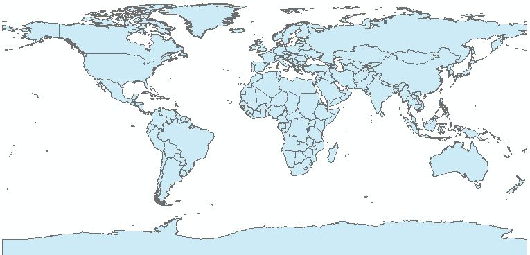 | ESRI Shapefile | Polygon | |
| 中国省级行政区划 | 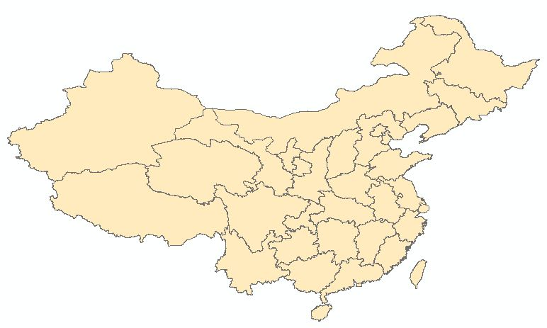 | ESRI Shapefile | Polygon | |
| 中国地市级行政区划 | 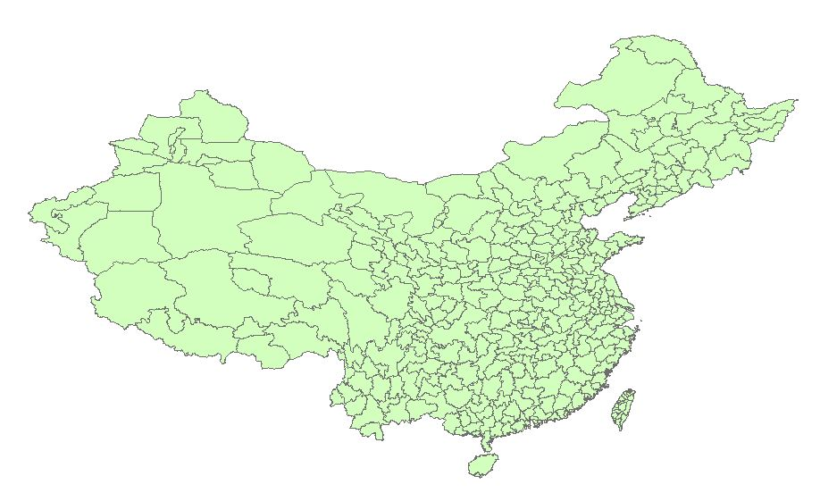 | ESRI Shapefile | Polygon | |
| 中国县级行政界线 | 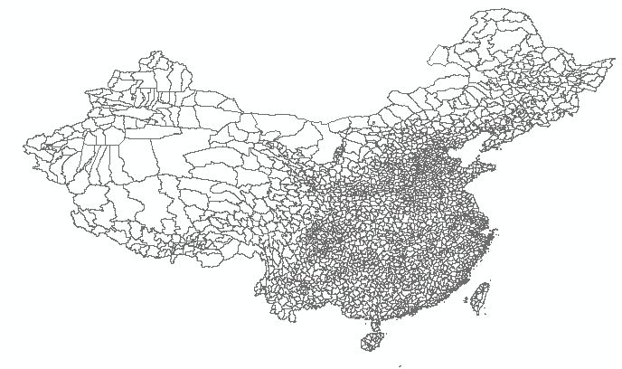 | ESRI Shapefile | Polygon | 前往下载 （按省份下载） |
| 中国县级居民点 | 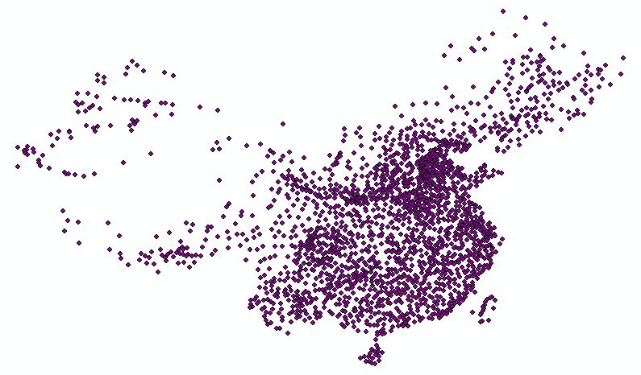 | ESRI Shapefile | Point | |
| 南海诸岛及九段线 | ESRI Shapefile | Polyine | ||
| 一级河流 | 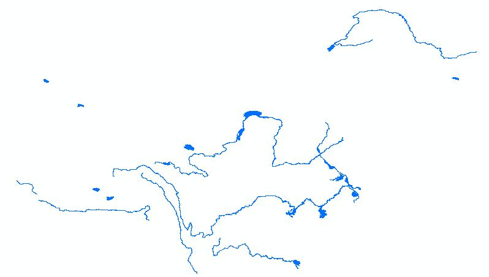 | ESRI Shapefile | Polygon ESRI Shapefile | Polyline |
|
| 三级及以上河流 | 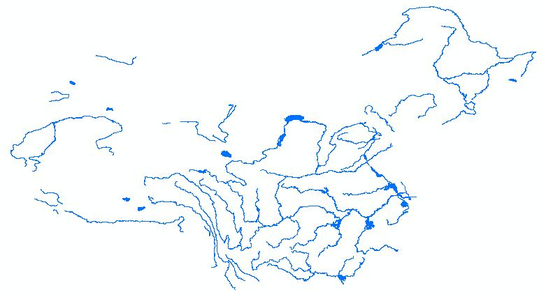 | ESRI Shapefile | Polygon ESRI Shapefile | Polyline |
|
| 四级河流 | 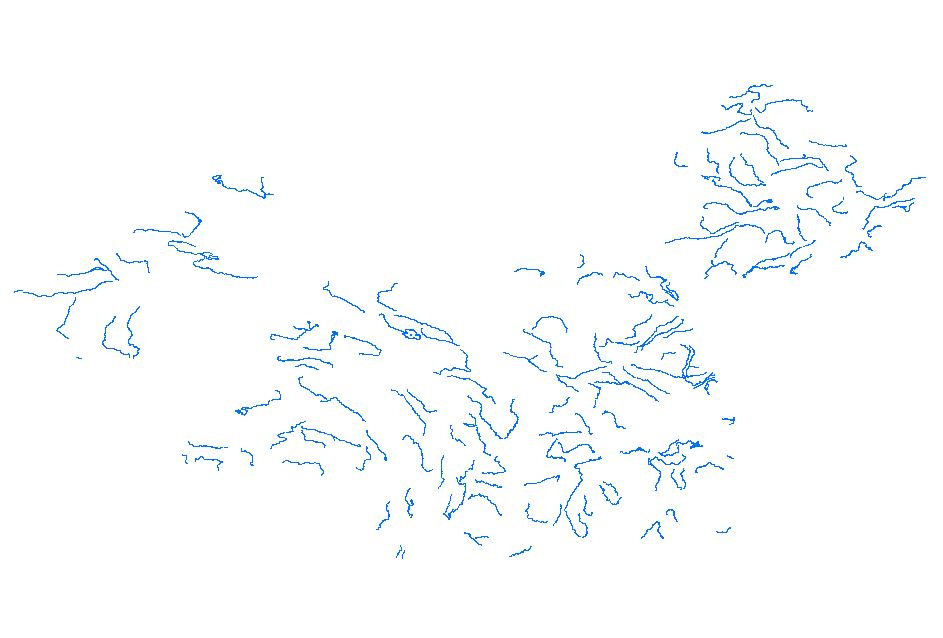 | ESRI Shapefile | Polygon ESRI Shapefile | Polyline |
|
| 五级河流 | 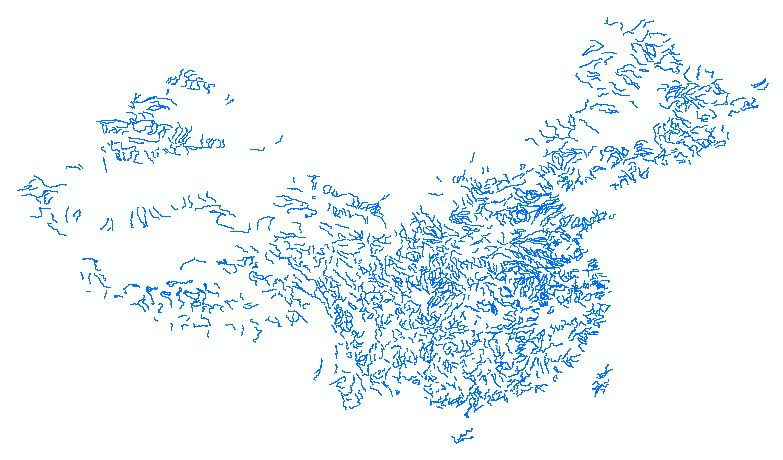 | ESRI Shapefile | Polygon | |
| 主要铁路 | 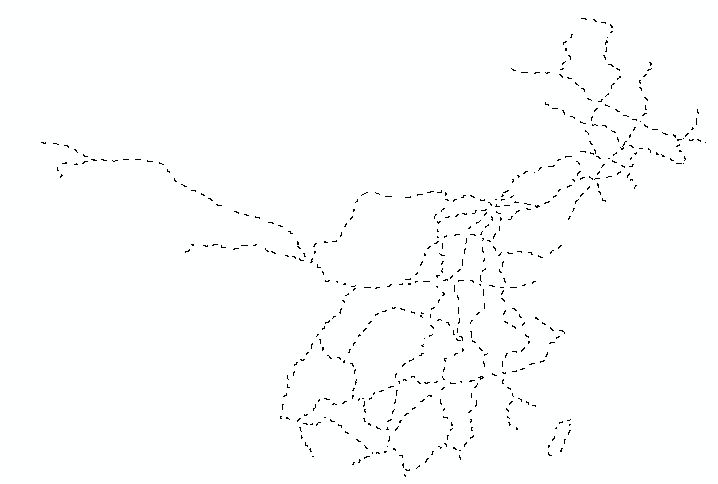 | ESRI Shapefile | Polyline | |
| 主要公路 | 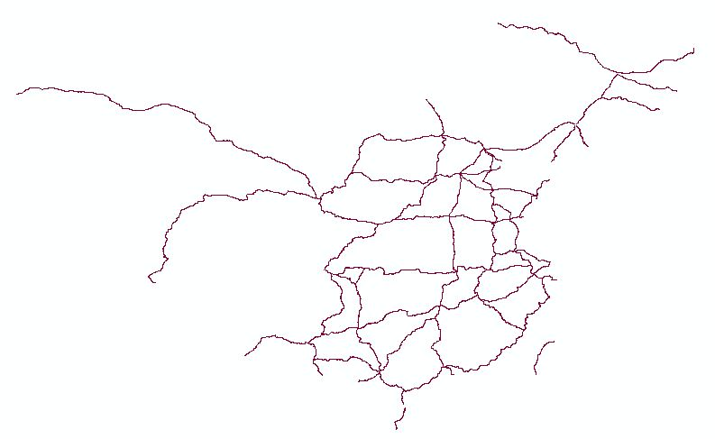 | ESRI Shapefile | Polyline |
使用数据时需要注意，数据默认投影坐标为WGS84，若出现投影未定义情况时，可定义为WGS84坐标
如果遇到任何数据问题，如坐标不匹配、文件损坏等，请在下方评论区留言，我将及时更新，十分感谢您的支持~
2015年省级与地市级行政区划下载
2015年全国各省省级与地市级行政区划矢量数据，比例尺为1:25万。
2015年行政区划数据列表
| 编号 | 省级 | 缩略图 | 数据类型 | 数据下载 省界 | 地州界 |
|---|
2015年全国各省行政区划矢量数据，已全部上传
如果遇到数据使用问题，或需要的数据不在列表中，可以在页面下方评论区留言！
全国县级行政区划下载
全国县级行政区划矢量数据不大，但下载量较多，云存储外链流量较大，为限制流量，改为按省级区划下载数据，敬请谅解~
全国县级行政区划数据列表
| 编号 | 省级 | 缩略图 | 数据类型 | 数据下载 |
|---|
全国县级行政区划矢量数据，已全部上传
如果遇到数据使用问题，或需要的数据不在列表中，可以在页面下方评论区留言！
如果需要全国的县级行政区划数据，可以留下邮箱地址，将数据发送至您的邮箱！
Fighting, GISer!
最新博文